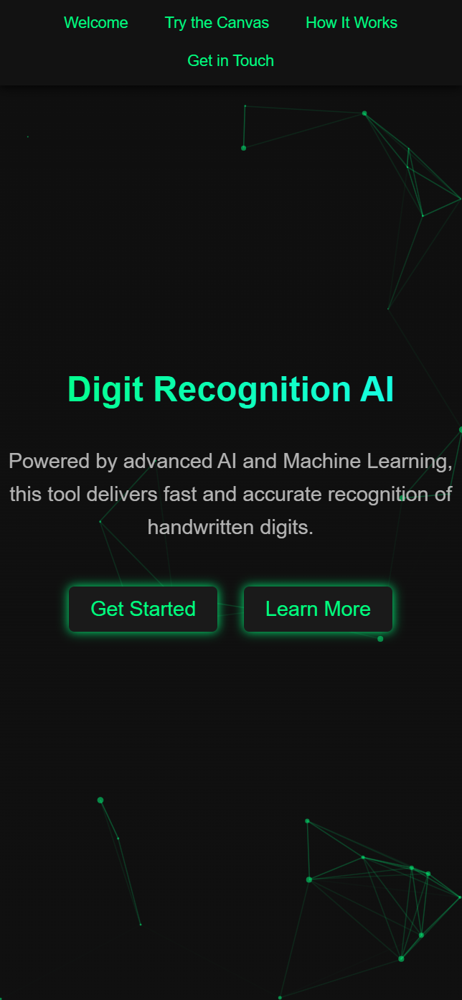
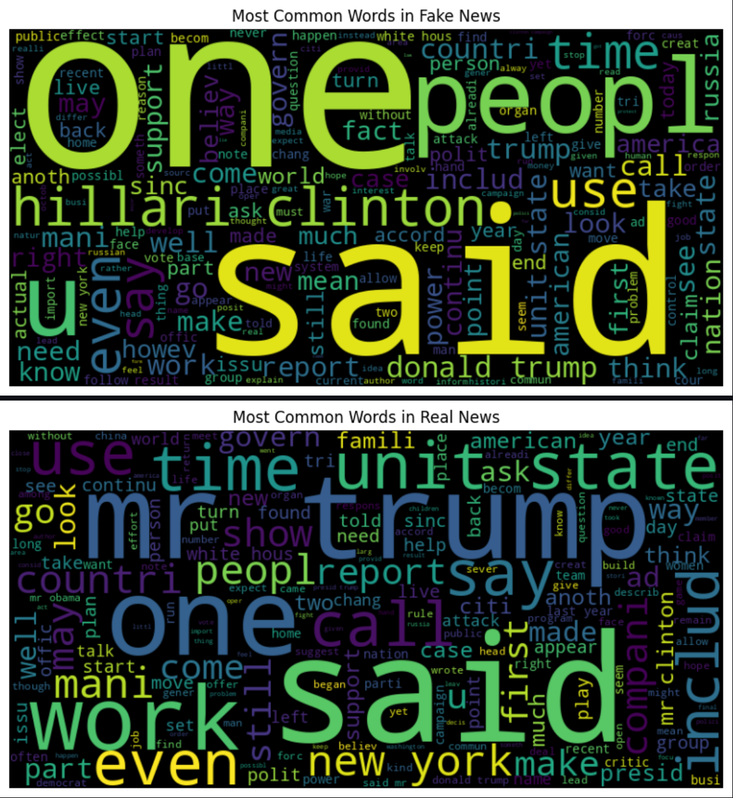
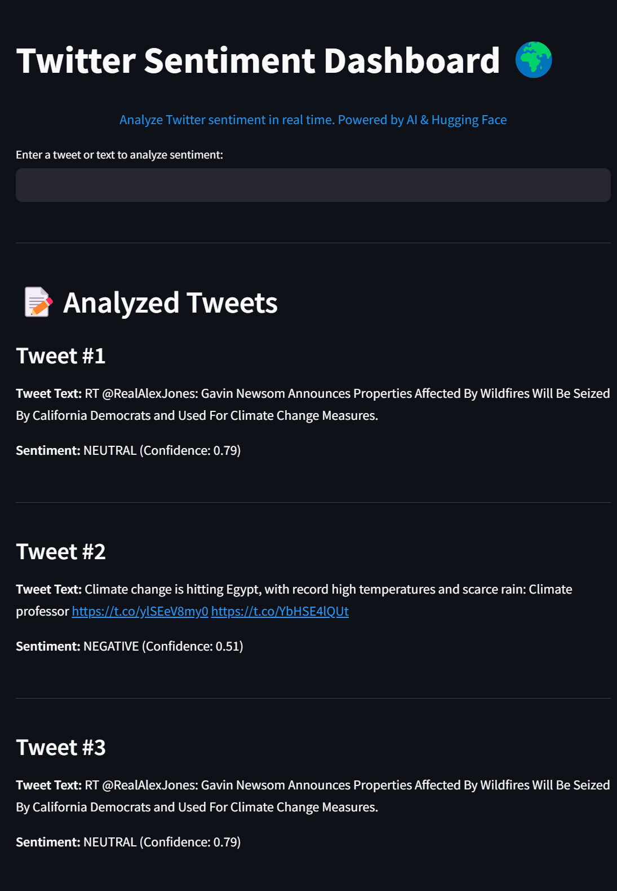
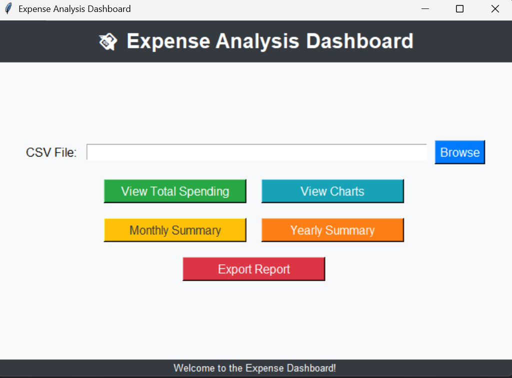
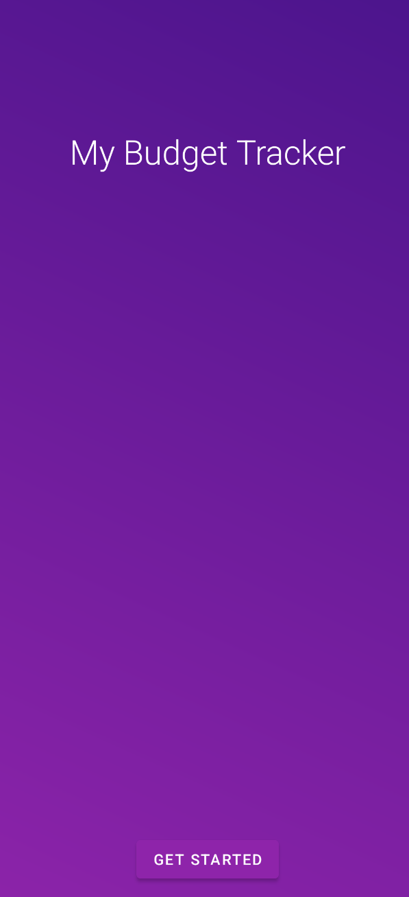
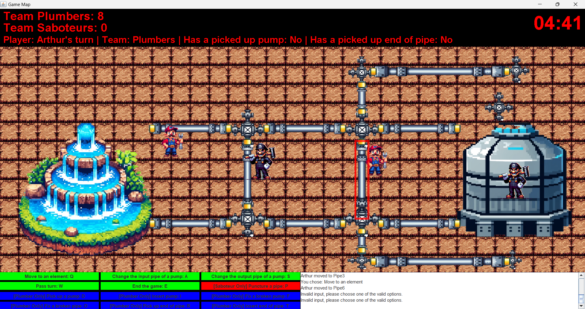
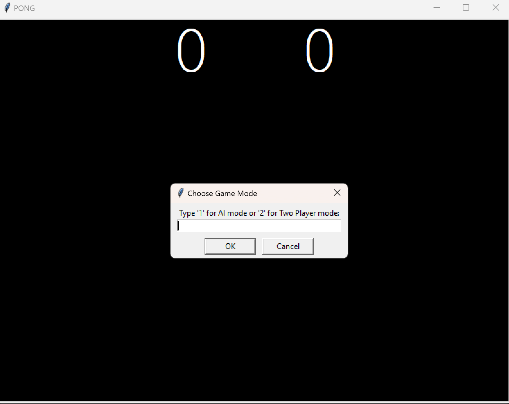
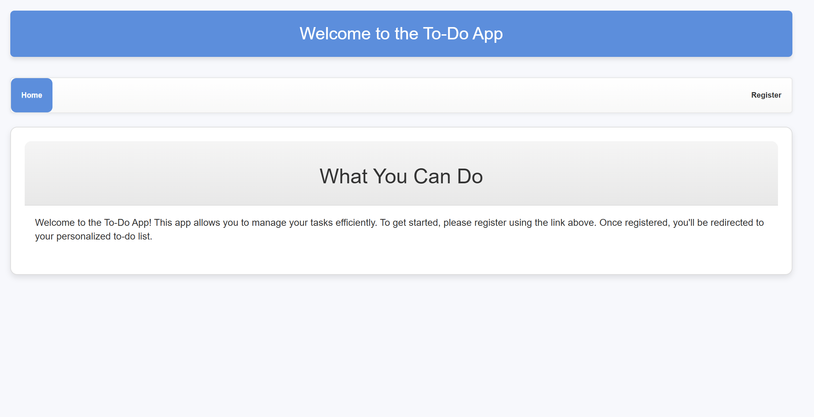

I build efficient and reliable software solutions for the future.
I'm a passionate software engineer with a strong foundation in programming, problem-solving, and creating impactful solutions. I thrive in building scalable systems and working on projects that make a difference.
Also known as BME, the Budapest University of Technology and Economics is one of Europe's most prestigious universities, providing exceptional education in engineering, technology, and economics. I am proud to be studying software engineering here.
A full-stack web application that uses a MobileNetV2-based Convolutional Neural Network (CNN) to recognize handwritten digits drawn on a web canvas. Achieved 95% accuracy through transfer learning, fine-tuning, data augmentation, and careful image preprocessing.
Skills: Machine Learning · Deep Learning · Flask · TensorFlow/Keras · MobileNetV2 · NumPy · PIL · Flask-CORS · HTML · CSS · JavaScript · Railway.com
View Project This project explores how AI can be used to detect fake news using Natural Language Processing (NLP). Built using a Kaggle dataset, it experiments with models from traditional Logistic Regression to advanced deep learning models like BERT.
Skills: Machine Learning · Python · NLP · AI · Scikit-learn · pandas
View on GitHub A tool for analyzing the sentiment of any text or tweet. Built with Streamlit for the web interface and Hugging Face Transformers for sentiment classification, this app allows real-time sentiment analysis of tweets or custom text.
Skills: Python · Machine Learning · NLP · Streamlit · Hugging Face Transformers
View on GitHub A Python-based interactive tool designed for managing personal finances by analyzing expenses, tracking spending habits, and generating visual reports.
Skills: Data Visualization · Python · pandas · Matplotlib · Plotly
View on GitHub An Android application designed to help users track expenses across various categories, analyze spending habits with visual charts, and manage budgets efficiently.
View on GitHub Collaborated with a team to develop a strategic game in Java, following the full Software Development Life Cycle (SDLC).
View on GitHub A retro arcade game built with Python and Pygame, featuring fast-paced paddle and ball mechanics, dynamic AI, and multiplayer support.
View on GitHub A simple and efficient task management website built using modern web technologies. It allows users to add, edit, and delete tasks with an interactive and responsive UI.
